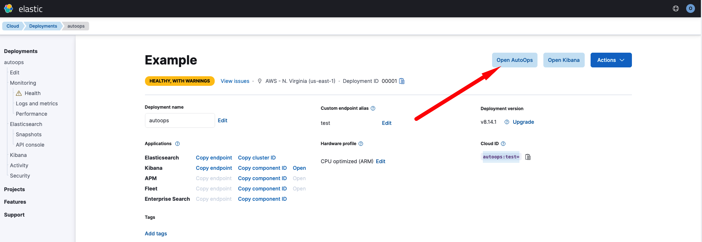

How to access AutoOps
editTo access AutoOps from your Elastic Cloud console, follow these steps:
- Log in to your Elastic Cloud Hosted account. Use your credentials to access your Elastic Cloud dashboard.
- Navigate through your list of deployments and locate the one you want to manage.
- Click Manage on the right side of the selected deployment.
- On the deployment details page, click Open AutoOps.
